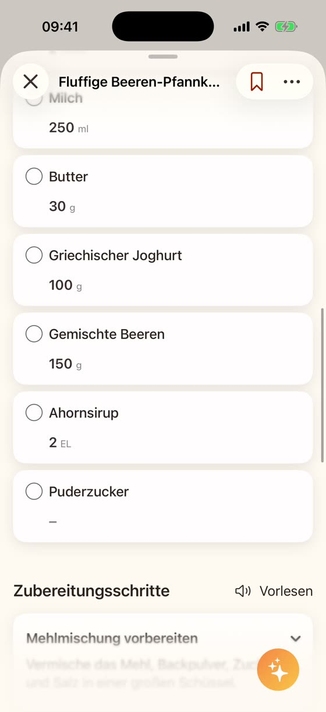

Kochmodus auf dem iPhone: Display anlassen
Schnelle Lösung ohne App: Einstellungen > Anzeige & Helligkeit > Automatische Sperre > Nie. Dann bleibt das Display in jeder App an, das kostet mehr Akku, und nach dem Essen musst du daran denken, es zurückzustellen. In ReciPics bleibt das Display nur an, solange ein Rezept offen ist, und die Schritte lassen sich vorlesen.
Im App Store ansehen

Echte Screens aus der App. Das Beispielrezept stammt von unserer eigenen Seite recipics.app.
Was ReciPics macht, solange ein Rezept offen ist
- Das Display bleibt an, solange das Rezept offen ist. Verlässt du das Rezept, gilt wieder deine normale automatische Sperre.
- Tipp neben „Zubereitungsschritte“ auf Vorlesen, und ReciPics liest alle Schritte mit der eingebauten iPhone-Stimme in deiner Gerätesprache vor. Nochmal tippen stoppt das Vorlesen.
- Tipp auf eine Zutat, um sie abzuhaken, sobald sie in der Schüssel ist.
- Die Schritte sind aufgeklappt. Klapp die zu, die du schon erledigt hast.
- Stell die Portionen vor dem Start auf 1x, 2x oder 4x.
So geht's
- Speichere das Rezept in ReciPics: Link von einer Rezeptseite einfügen, über den Teilen-Button oder ein Foto von Rezeptkarte oder Kochbuchseite.
- Öffne das Rezept in deinem Kochbuch und stell das iPhone so hin, dass du es sehen kannst.
- Tipp auf „Vorlesen“, um die Schritte zu hören, und hak die Zutaten nach und nach ab.
Mitten im Rezept eine Frage? Frag nach
Der Funkel-Button im Rezept öffnet den Assistenten. Tipp oder sprich deine Frage, zum Beispiel was du tun kannst, wenn die Sosse zu dünn ist oder dir der Schneebesen fehlt. Die Antworten beziehen sich auf dieses Rezept, und du kannst sie dir vorlesen lassen. Ändert der Assistent das Rezept, kannst du die Änderung rückgängig machen.
Fragen
Hat das iPhone einen eingebauten Kochmodus?
Nicht als eigene Einstellung. Das iPhone hat die automatische Sperre, und die gilt für alle Apps. Manche Apps halten das Display beim Kochen selbst an; ReciPics tut das, solange ein Rezept offen ist.
Liest die App einen Schritt nach dem anderen vor?
Nein. „Vorlesen“ liest alle Schritte hintereinander vor. Nochmal tippen stoppt das Vorlesen. Sprachbefehle wie „nächster Schritt“ gibt es nicht.
Welche Stimme liest vor?
Die eingebaute Sprachausgabe des iPhones in deiner Gerätesprache. Das Vorlesen passiert auf deinem iPhone; dafür wird das Rezept nirgends hingeschickt.
Funktioniert das mit Rezepten von überall?
Mit jedem Rezept in deinem ReciPics-Kochbuch: Rezepte aus Links, aus Fotos von Karten oder Kochbuchseiten und Rezepte, die die App vorschlägt. Manche Websites lassen den Import nicht zu.
Gibt es ReciPics nur fürs iPhone?
Ja. ReciPics ist eine iPhone-App ab iOS 26. Eine Android- oder Web-Version gibt es nicht.
Alle Rezepte in einem Kochbuch
ReciPics ist eine Kochbuch-App fürs iPhone. Speichere Rezepte von Websites, aus Kochbuch-Fotos und von handgeschriebenen Karten, rechne Portionen um und erstelle eine Einkaufsliste. Zutaten im Rezept ersetzen · Einkaufsliste aus Rezepten
Antworten des Assistenten zählen zum KI-Kontingent der App, das ohne Premium begrenzt ist. Für neue Nutzer ohne bezahltes Abo ist die Zahl der Link-Importe pro Monat begrenzt; die App zeigt, wie viele dir noch bleiben.
Fragen an den Assistenten und bei gesprochenen Fragen die Aufnahme werden an unsere Server und Dienstleister gesendet, darunter unser KI-Anbieter OpenAI (USA); siehe Datenschutz.
ReciPics im App Store ladenFür iPhone mit iOS 26 oder neuer.